Как установить Windows и Linux на одном компьютере?
Тем, кто перешёл с Windows на Linux, обычно не просто сразу перестроиться. В Linux всё новое, пока незнакомое. А если ещё возникают проблемы, то так и хочется вернуться к привычной Windows. Как более безболезненно перейти с Windows на Linux?
Ответ прост: какое-то время можно пользоваться ими совместно. ЭТО СТАТЬЯ ДЛЯ ТЕХ, КТО НИ РАЗУ ЭТОГО НЕ ДЕЛАЛ. Как установить Windows и Linux на одном компьютере? Да, есть вариант купить такой недорогой мини компьютер и тестировать linux на нем:
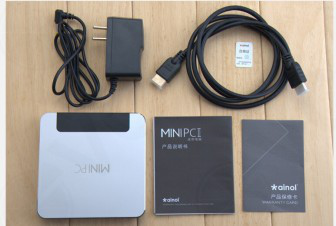
Но если вы не настолько круты, чтобы заплатить за это 100$, то читайте дальше...
1. Как установить Windows и Linux параллельно?
На один компьютер можно сразу установить и Windows, и Linux. Выбор операционной системы будет осуществляться при загрузке компьютера. (Все картинки кликабельны)
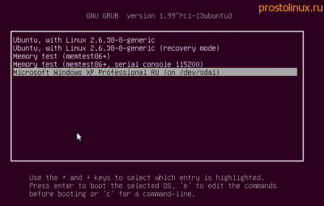
О том, как установить Linux уже писалось на этом сайте, стоит помнить только одно правило:
Сначала всегда устанавливается Windows, а уже затем Linux!
Дело в том, что Windows в этом отношении очень тупая система, и если вы будете ставить её после Linux, то она просто затрёт загрузчик Linux и установит свой. К тому же из под Windows вы просто не увидите разделы Linux и не сможете их настроить.
Стоит обратить внимание, что есть более простой способ установить Linux прямо из под Windows. Ubuntu и основанные на ней сборки предлагают программу WUBI, которая позволяет установить Ubuntu прямо из Windows.
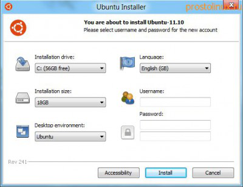
При этом - это безопасный метод, программа создаст прямо в файловой системе Windows раздел для Ubuntu. Если вам потом система будет не нужна, то вы сможете её просто удалить, как обычную программу Windows. Для новичков - это отличный метод.
Но есть конечно и минусы - система будет работать медленнее, чем если бы она была установлена как обычно. Но это всё сделано лишь как возможность попробовать новую для себя OS. Если вам она понравится и вы решите навсегда перейти на неё, то просто снесёте Windows и установите Linux уже как положено.
Но если вы хотите работать в двух операционных системах одновременно, то вам нужен другой способ - установить Windows в виртуальной машине.
2. Как установить Windows в Linux?
В этом случае вы сможете использовать одновременно и Windows, и Linux. Единственный минус в том, что операционная система, установленная в виртуальной машине, будет иметь некоторые ограничения: вы не сможете запускать тяжёлые игры, ресурсов не хватит. А всё остальное работать будет отлично, в том числе и сеть, а так же совместный доступ к папкам.
Так же вы сможете под виртуальной машиной запустить оборудование, которое по каким то причинам не может работать, или работает не в полную силу, под Linux.
Лично я запускал принтер и сканер в Windows, которая стояла на виртуальной машине. Они работали и в Linux, но под Linux не было утилит, которые позволяли работать этим устройствам, задействуя весь функционал.
Начать нужно конечно с установки виртуальной машины, в нашем случае это будет Virtual Box, хотя существуют и другие. Для этого можно зайти на сайт программы и скачать нужный пакет: сайт VirtualBox.
Можно так же добавить репозиторий этой программы, чтобы она обновлялась автоматически. Только не ставьте virtualbox-ose, которая есть по умолчанию в репозитории Ubuntu, в этой версии нет функции подключения внешних устройств через USB. Итак, запускаем Virtual Box:
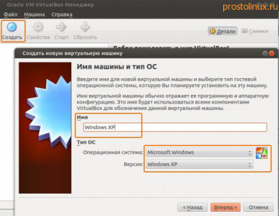
Нажимаем кнопку "Создать" в левом верхнем углу и начинаем создавать новую виртуальную машину. Даём машине название и выбираем тип операционной системы.
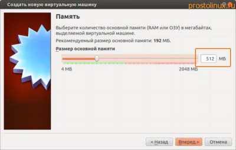
Выбираем размер оперативной памяти. Советую выбирать не слишком мало, чтобы виртуальная машина работала шустрее, но и выбирать значение больше половины оперативной памяти основного компьютера тоже нельзя.
У меня на ноутбуке 2 Гб оперативной памяти, поэтому для машины с Windows XP я выбрал размер в 512 Мб, хотя система предлагала мне всего 192 Мб - это было бы маловато.
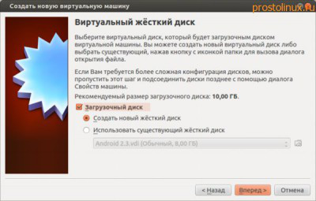
Тут нам предлагают выбрать диск, куда будет устанавливаться система. Выбираем первый вариант, если вы делаете всё в первый раз.
Тут у нас выбор из четырёх вариантов, я всегда выбирал первый, и вам советую. Этот вариант создаёт виртуальный жёсткий диск в вашей домашней директории. Его всегда можно удалить и создать заново. А можно скинуть на флешку и перенести на другой компьютер. Что дальше?
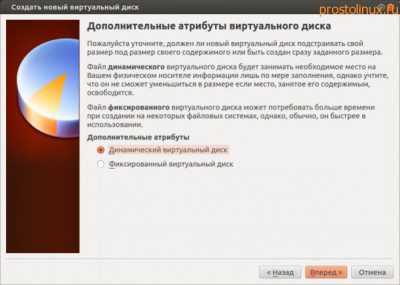
Тут лучше выбрать первый вариант - Динамический диск. Можно дать побольше места, динамический диск всё равно будет занимать столько пространства, сколько действительно нужно в данный момент.
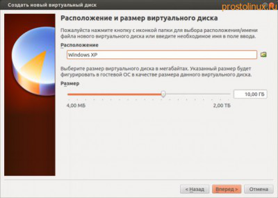
После окончания всех эти первоначальных настроек, у вас появится новая виртуальная машина. Запускаем её. После запуска вам сразу предложат выбрать, с какого носителя вы будете устанавливать систему: если у вас OS находится на DVD, но укажите привод, а если вы будете устанавливать из .ISO образа, то укажите путь к нему:
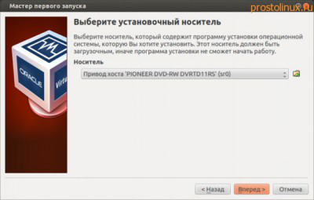
После всех этих действий запустится установка системы, как если бы вы устанавливали её на обычный компьютер:
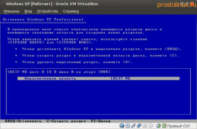
Через какое то время система установится и мы уже имеем готовую OS Windows. Но на этом установка не заканчивается. Очень важно установить драйвера в нашу виртуальную машину, чтобы интеграция была полной. Для этого не нужно ничего дополнительно скачивать, просто идём в меню виртуальной машины: Устройства - Установить дополнения гостевой OS:
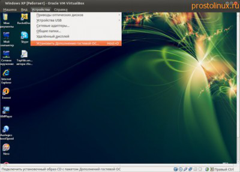
После этого запуститься мастер установки, где всё будет происходить, как при установки обычной программы в Windows:
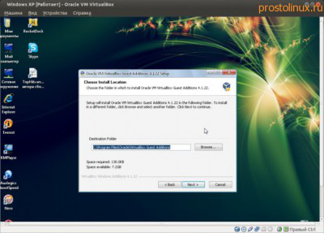
После перезагрузки вы получаете почти полноценную операционную систему Windows, которая будет работать одновременно с основной системой Linux.
Теперь можно настроить сеть и подключение внешних устройств. Это можно сделать при помощи значков в нижнем правом углу виртуальной машины.
Думаю, там не так всё сложно, разберётесь сами. Но есть ещё один вариант, как можно установить Windows и Linux на одном компьютере.
3. Как установить Linux в WindowУстановка линукс
s?
Ну а для тех, кто ещё совсем не уверен, что он хочет перейти из Windows в Linux, может сделать наоборот: В основной системе Windows установить виртуальную машину, а уже в ней установить Linux. В этом случае можно поэкспериментировать с разными версиями Linux и её рабочими окружениями, чтобы выбрать то, что по душе, а за одно и освоить эту новую для себя систему.
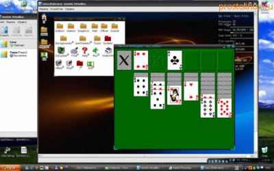
Вот такими способами можно установить Windows и Linux на одном компьютере. Если возникнут вопросы, то пишите в комментариях, постараюсь помочь.
Похожие темы: